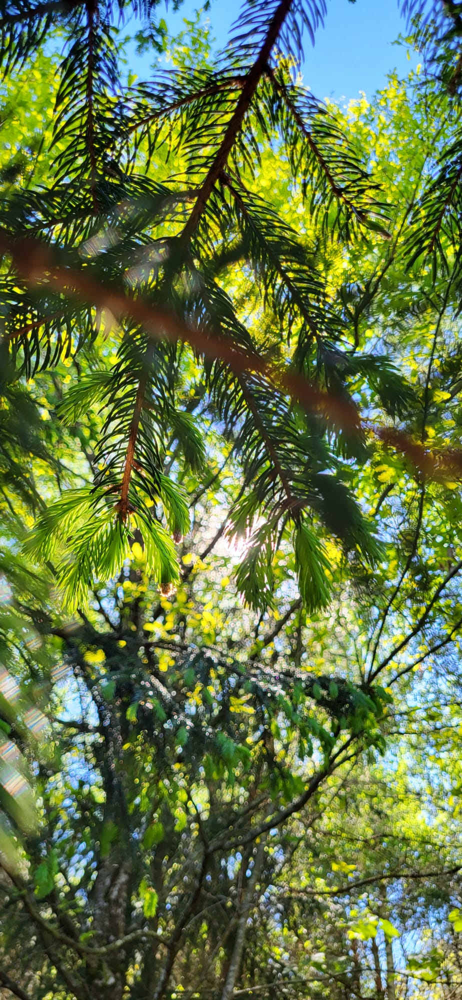
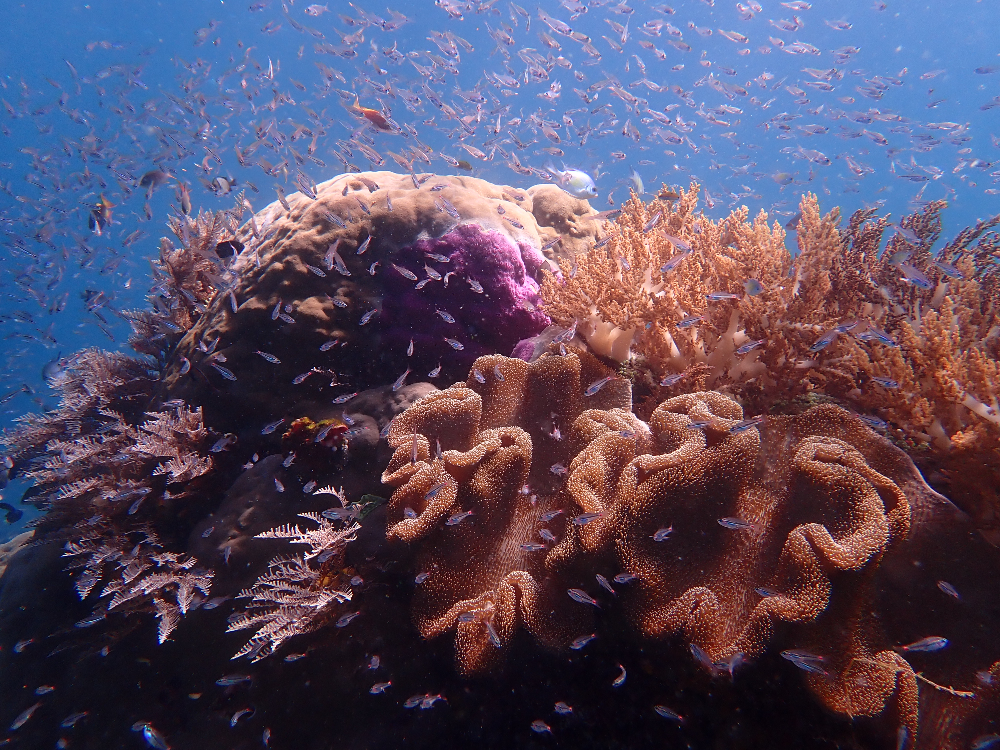
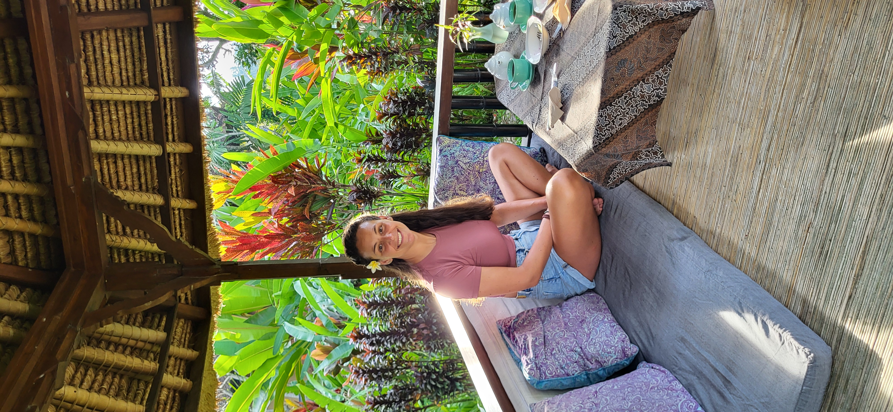

Benvenuto a Veranaturae
Un Santuario per la Consapevolezza, lo Yoga e l'Apprezzamento della Natura
Consapevolezza
Nel nostro mondo frenetico, spesso perdiamo il contatto con il momento presente e la nostra connessione con il mondo naturale. La consapevolezza ci offre un percorso di ritorno alla coscienza, aiutandoci a trovare pace, chiarezza e una più profonda apprezzamento dei momenti semplici della vita.
La consapevolezza è la pratica di prestare attenzione al momento presente con curiosità e senza giudizio. Si tratta di essere pienamente consapevoli di ciò che sta accadendo ora – i nostri pensieri, le nostre emozioni, le sensazioni corporee e il mondo che ci circonda.
Alla base, la consapevolezza è semplicemente l'arte di essere presenti. È imparare a osservare i tuoi pensieri e le tue emozioni mentre sorgono, senza lasciarsi coinvolgere. Immagina di sederti vicino a un ruscello e guardare le foglie galleggiare – è così che impariamo a osservare i nostri pensieri: notandoli e lasciandoli passare.
La consapevolezza può essere praticata attraverso la meditazione, la respirazione consapevole, o semplicemente portando attenzione alle attività quotidiane. Non si tratta di svuotare la mente – è sviluppare una relazione gentile e curiosa con tutto ciò che accade nel momento presente.
Attraverso una pratica regolare della consapevolezza, puoi sperimentare numerosi benefici:
- Riduzione dello stress e dell'ansia
- Miglioramento della regolazione emotiva
- Migliore qualità del sonno
- Aumento della consapevolezza di sé
- Maggiore senso di pace interiore
- Relazione più compassionevole con te stesso e gli altri
I Miei Servizi

Coaching 1:1
Ritiro

Mindfulness al Lavoro
Yoga e Respirazione

Mindfulness Subacquea

Ayurveda
Chi Sono
Ciao, sono Veronica – biologa delle piante, coach di consapevolezza, amante della natura, e qualcuno che sa cosa significa vivere in modalità pilota automatico.
Per anni ho lavorato come biologa delle piante, profondamente connessa al mondo naturale. La natura è sempre stata il mio rifugio - un posto dove mi sentivo in pace, radicata e veramente me stessa. Ma qualcosa è cambiato quando ho scoperto la consapevolezza: quella sensazione di connessione si è approfondita. Il modo in cui vivevo la vita, incluso il mio tempo nella natura, è diventato più vivido, più presente, più vivo.
Questo è ciò che mi ha ispirato a diventare una coach di consapevolezza. Volevo condividere questo modo di vivere più consapevolmente - con meno stress, più presenza e più gioia.

Contattami
Interessato a partecipare a una sessione o a saperne di più sulle pratiche di consapevolezza? Contattami per maggiori informazioni.
Contattami